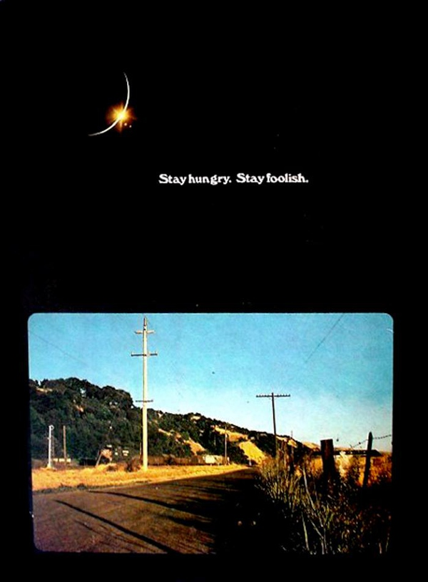

Tony
read
categories
tags
archive
about
Tony's Blog
Stay Hungry, Stay Foolish.
人生最大的意义是什么？

今天看了纪录片《地球脉动2》，里面的动物，还没出生就有可能面对死亡，能够活下来，对于他们来说，已经是非常幸运的事。所以，作为人类，也应该感激，在这个星球上，活着，就是非常幸运的事。 看完《入殓师》，对于死亡的意义让我不得不重新思考。 看完《东京物语》，死亡仿佛就在我们身旁，有些人，一个转身，就不在了。 我不得不思考着：人生最大的意义是什么？
全栈
mysql
,
mysqli
Tony
22 NOV 2017
瓦尔登湖［Life in the Woods］
时间决定你会在生命中遇见谁，你的心决定你想要谁出现在你的生命里，而你的行为决定最后谁能留下。 最富有的时候，你的生活也是最贫穷的。吹毛求疵的人即便在天堂也能挑出瑕疵。一个安心的人在哪都可以过自得其乐的生活，抱着振奋乐观的思想，如同居住在皇宫一般。犯不着千辛万苦求新，无论衣服还是朋友。把旧的翻新，回到它们中去。万事万物没有变，是我们在变。
全栈
mysql
,
mysqli
Henry David Thoreau
30 Jun 2017
乔布斯2005斯坦福大学毕业演讲
第一个故事讲的是，如何将生活中细微的事情联系在一起。 你无法预测你的未来，但是，当你回顾你所有的人生经历，就会发现他们是如何串联在一起的，凡有所学，皆成性格。你所经历的，就是你的人生。你的性格，爱好，行为习惯，生活环境，朋友，工作，这些都会对一个人产生影响。 第二个故事是关于爱和损失。 混乱能够打破常规，产生新的秩序，接受生命中的意外。有时候，你以为失去了什么，或许才是收获的开始。 第三个故事是关于死亡。 把生命的每一天当作最后一天来度过，生命才是最宝贵的稀缺资源，不要被教条所束缚，跟随你的内心，不要停止寻找，找到你一生所爱的东西。
全栈
mysql
,
mysqli
steveJobs
27 Jun 2017
乔布斯2005斯坦福大学毕业演讲
第一个故事讲的是，如何将生活中细微的事情联系在一起。 你无法预测你的未来，但是，当你回顾你所有的人生经历，就会发现他们是如何串联在一起的，凡有所学，皆成性格。你所经历的，就是你的人生。你的性格，爱好，行为习惯，生活环境，朋友，工作，这些都会对一个人产生影响。 第二个故事是关于爱和损失。 混乱能够打破常规，产生新的秩序，接受生命中的意外。有时候，你以为失去了什么，或许才是收获的开始。 第三个故事是关于死亡。 把生命的每一天当作最后一天来度过，生命才是最宝贵的稀缺资源，不要被教条所束缚，跟随你的内心，不要停止寻找，找到你一生所爱的东西。
全栈
mysql
,
mysqli
steveJobs
27 Jun 2017
«
1
2
»